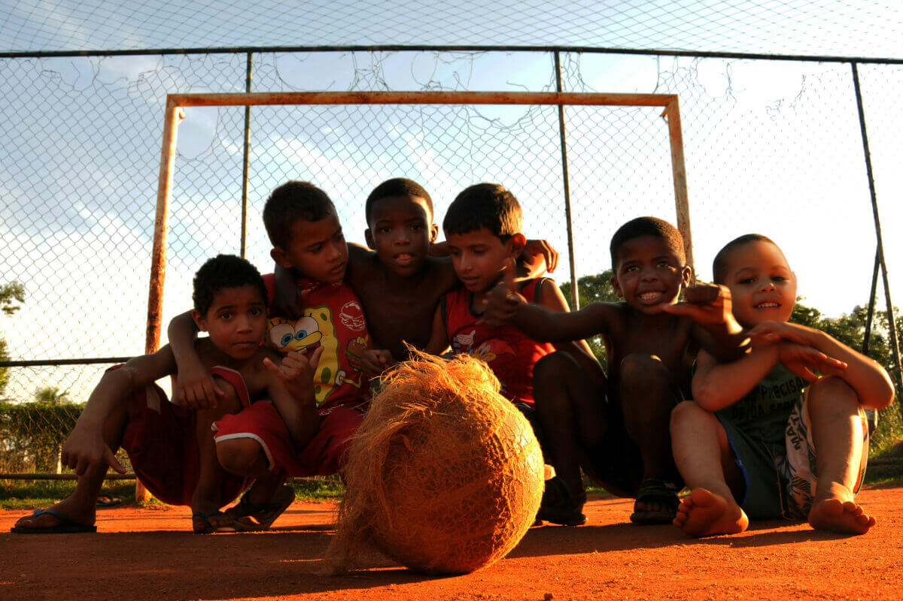

Sobre Nós: Mais que um time, uma família
A "ONG Driblando ⚽ Destino" nasceu em 2020 do sonho de usar o esporte mais amado do Brasil como ferramenta de inclusão social. Somos uma organização sem fins lucrativos dedicada a acolher crianças e adolescentes órfãos, entre 5 e 15 anos, oferecendo muito mais do que um simples treino de futebol.
Acreditamos que o campo é uma escola para a vida, ensinando disciplina, trabalho em equipe e resiliência.
Nossa Missão
Nossa missão é clara: oferecer um ambiente seguro, acolhedor e estruturado para que cada criança possa desenvolver seu potencial máximo, tanto dentro quanto fora das quatro linhas. Queremos formar não apenas futuros craques, mas principalmente, grandes cidadãos.
- Oferecemos treinos de futebol com profissionais qualificados.
- Providenciamos acompanhamento escolar e psicológico.
- Promovemos a integração social e o senso de comunidade.